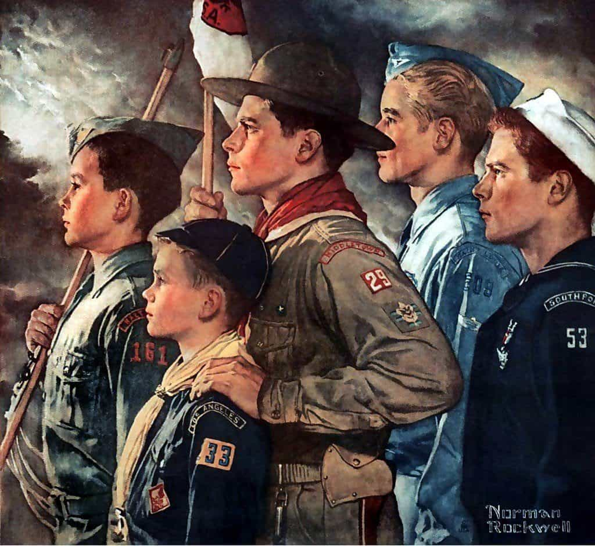
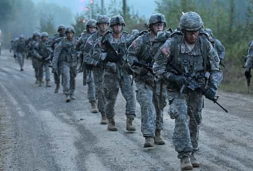

I was lucky enough to be a part of one of the last great Boy Scout troops here in North Texas, where we were taught proper marksmanship by an ex-special forces scoutmaster. He ran the troop military-style, dividing us into patrols, where we could attain ranks such as patrol leader and assign push-ups to disobedient scouts of lower rank.
This taught us discipline, responsibility, and how to work with other young men to achieve common goals, as well as other manly skills such as how to build a fire and survive in the wilderness.

Switzerland takes this concept one step further with mandatory military service for all men, as well as maintaining youth clubs comparable to the Boy Scouts, and therefore despite having one of the highest rates of gun ownership in the world, they simultaneously have one of the lowest rates of mass shootings of any nation. What this tells us is that the United States does not have a gun problem, but rather a culture problem.
While Switzerland has not been involved in any serious armed conflict since the mid-1800s, they have scrupulously maintained an outstanding military. All able-bodied men must serve at least 300 days in the armed forces—not including boot camp and specialized training—and after completing their service will drill with the reserves for the next ten years.
If a citizen is deemed unfit for military service, they will most likely be required to perform some other civil service, such as serving as a police officer, firefighter, teacher, or will perform some other form of community service and will pay a slightly higher income tax until the age of thirty.
Citizens are fairly compensated for their service, and are given their rifle to keep in their home in the event of a national emergency. This is sometimes referred to as the “gun in every closet policy,” which effectively arms around half of the population. The benefits of this system are threefold.
1. Military Preparedness

If Switzerland was ever invaded, the Swiss government could mobilize every able-bodied man at the drop of a hat. Many historians even speculate that this is the reason that Hitler chose not to invade Switzerland during WWII. He knew that attacking an entire nation of well-trained and well-armed, freedom-loving nationalistic militiamen who had been training for a foreign invasion since their adolescence would be more trouble than it was worth.
To hold and occupy a territory such as this, once conquered, would require more effort than Hitler was willing to expend.
2. Skilled Citizens
This policy leads to a population that leaves the military and enters the workforce with discernible skills that can be used to support themselves.
This prevents people from descending into poverty and sucking on the government teat via the welfare system, and helps to curtail violent crime. An unskilled labor force is an unstable and volatile labor force.
3. A Strong Sense Of Nationalism
It is only natural that nationalism springs from military service like water springs from Old Faithful in Yellowstone. When you put your blood, sweat, and tears into something, it gives you a sense of responsibility for that something, a sense that a small piece of it belongs to you, like owning stock in a corporation.
When you consider that less than one percent of the American population is active military, yet almost twenty-five percent of Americans are receiving welfare, the entitled American “gimmedat” attitude at becomes all too evident.
The Link To Mass Shootings
Aftermath of the Las Vegas massacre in 2017.
Mostly stemming from the radical left of the American political spectrum, buzzwords like “toxic masculinity” have been spreading like wildfire. As early as elementary school, teachers are shaming boys for having masculine traits and indoctrinating children with the idea that boys and girls should be treated the same even though they have completely different needs.
Unlike the good old days when boys who were caught fighting would be taken to the gym, issued boxing gloves, and told to duke it out, many school districts will go so far to prevent violence that they will even punish a boy who fights in self-defense, thus completely emasculating him and teaching him not to stand up for himself.
This is not to say that fighting is the answer to all of our problems, but rather to say that men are naturally more confrontational due to the high levels of testosterone coursing through our veins.
Rather than teach boys how to channel their aggressive impulses into something positive such as martial arts, boys are told that having these impulses in the first place is wrong, and that wanting to be a strong leader is oppressive towards women, while girls are given free rein to push “the future is female” propaganda. This leads to many boys simply shutting themselves up in their rooms playing violent video games to release those urges.
When you factor in that the left is also providing monetary incentive for women to become single mothers—thus creating more households without positive male role models to teach boys how to become good men—the stage is set for a select few members of society to be adversely affected with severe aggression issues and start shooting up crowds.
In Switzerland, mandatory military service teaches men how to be men. Despite having nearly half the Swiss population with a firearm in their home, Switzerland has a low incidence of violent crime—and mass shootings for that matter—compared to the U.S.
Women’s Suffrage In Switzerland

Since the last canton of Switzerland gave women the vote in the early nineties, however, laws have been passed with the aim of reducing the military presence in the country.
Ammunition for service rifles is now required to be kept at a depot rather than at home with the rifle in question, and more and more referendums are being held that want to end the tradition altogether, as well as remove the mandatory service requirement.
Only time will tell whether this tradition will remain intact, and if it doesn’t—and gun violence increases—it will prove my theory to be more than simply the deranged thoughts of a mad scientist.
Read More: Switzerland Will Never Be Conquered In War